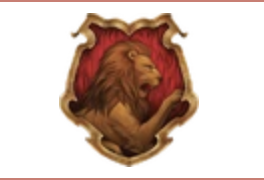
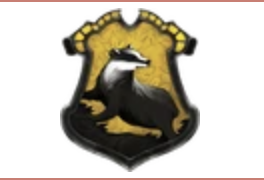
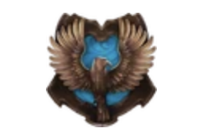
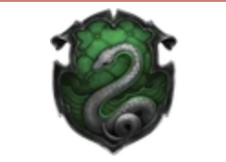

Las cuatro casas se llaman Gryffindor, Hufflepuff, Ravenclaw y Slytherin.
Cada casa tiene su propia noble historia y cada una ha producido notables brujas y magos.
Mientras estéis en Hogwarts, vuestros triunfos conseguirán que las casas ganen puntos, mientras que cualquier infracción de las reglas hará que los pierdan.
Al finalizar el año, la casa que obtenga más puntos será premiada con la copa de la casa, un gran honor. Espero que todos vosotros seréis un orgullo para la casa que os toque
—Minerva McGonagall a los estudiantes de primer año en 1991, poco antes de la ceremonia de selección.
Información de las casas
Casas
Fundadores
Colores de la Casa
Animal
Elemento
Rasgos
Fantasmas
Sala Común
Sistema de las Casas
Selección
Los alumnos pertenecientes a cada casa no necesariamente tienen todas las cualidades que caracterizan a cada una de ellas. Hay casos en los que el Sombrero Seleccionador recibe estudiantes que le hacen dudar sobre a qué casa deberían ser asignados. En caso de que el Sombrero dude durante más de cinco minutos, a ese estudiante se le denomina Hatstall.
uchas veces, el Sombrero Seleccionador pone a un estudiante en una casa por tradición familiar. Este es el caso de Draco Malfoy, Fred Weasley, George Weasley, Vincent Crabbe, Gregory Goyle, Ron Weasley, Ginny Weasley... Hay circunstancias, sin embargo, en las que se rompe esta tradición, como en los casos de Sirius Black y Albus Potter.
Casas
Gryffindor
La Casa Gryffindor fue fundada por el célebre mago Godric Gryffindor. Godric sólo aceptaba en su casa a aquellos magos y brujas que tenían valentía, disposición, coraje y caballerosidad, ya que éstas son las cualidades de un auténtico Gryffindor. Los colores de esta casa son el dorado y el escarlata y su símbolo es un león. La reliquia más preciada de la casa es la espada de Godric Gryffindor, perteneciente, como su nombre indica, al fundador de la casa. Los estudiantes de esta casa pasan la mayor parte del tiempo en la Torre de Gryffindor, ubicada en el séptimo piso del Castillo de Hogwarts.
Hufflepuff
La Sala Común de Hufflepuff se encuentra en una bodega en el mismo pasillo subterráneo que la cocina. Inicialmente, Hufflepuff buscaba alumnos que simplemente quisieran pertenecer a esa casa, aunque actualmente busca alumnos leales, honestos y que no teman el trabajo pesado. La fundadora es nada menos que la bruja Helga Hufflepuff, amiga desde la infancia de Rowena Ravenclaw. Helga fue una bruja muy noble, amigable y la principal impulsora de que Hogwarts aceptase a alumnos nacidos de muggles. La principal reliquia de la casa es la copa de Helga Hufflepuff. El símbolo de la casa es un tejón negro y sus colores representativos son el amarillo y el negro carbón.
Ravenclaw
La Casa Ravenclaw se encuentra en una torre en el ala oeste del castillo. En la entrada se encuentra una estatua con forma de águila que dice acertijos y sólo te deja entrar si lo resuelves. Sus colores son el azul y el bronce. Ravenclaw busca alumnos creativos, curiosos y que siempre busquen la respuesta. Fue fundada por la bruja, nacida en las cañadas de Escocia, Rowena Ravenclaw. Supuestamente es la principal inventora del nombre, lugar y formato de Hogwarts. También es la causante de que las escaleras se muevan. Su principal reliquia es la diadema de Rowena Ravenclaw. El símbolo de la casa es el águila, aunque en alguna versión del escudo es un cuervo.
Slytherin
La Casa Slytherin está caracterizada principalmente por la ambición y la astucia. Fue fundada por el mago Salazar Slytherin. La Sala Común está situada en las mazmorras, pasando por un serie de numerosos pasillos subterráneos. Posiblemente se llega a ellos a través del Vestíbulo de Hogwarts . Específicamente se encuentra debajo del Lago Negro, haciendo que la sala común sea fría y con una tonalidad verdosa, ya que hay ventanas que dan a las aguas. Se accede a ella por una puerta altamente disimulada en un muro de piedra, diciendo una contraseña requerida. La única conocida es "Sangre Pura". Su principal reliquia es el guardapelo de Salazar Slytherin. El animal representativo es la serpiente, sus colores son verde y plateado y el elemento es el agua, asociada con la astucia y la frialdad.